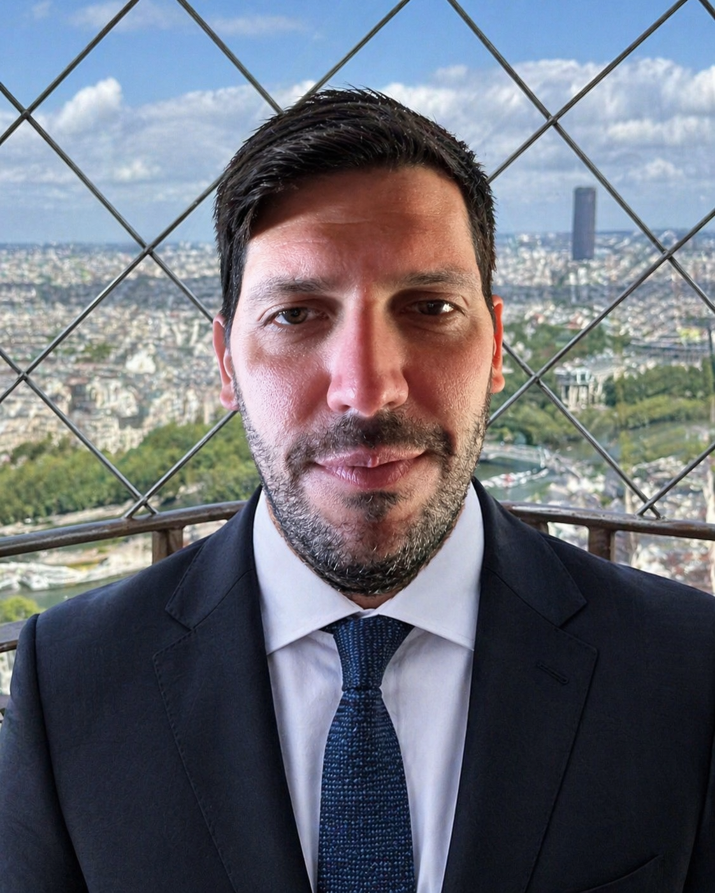

About this project
Key Contributions
UX Design Portfolio
Senior UX designer with a decade of experience building internal analyst tools, enterprise platforms, and consumer-facing apps for organizations where the stakes are high and the data is complex.
Selected Work
Enterprise platforms, mobile apps, and government tools — designed under real constraints for real analysts.

About Me
I'm a UX designer who spent three years owning the product backlog. That means I write requirements developers can actually build, prioritize ruthlessly when scope balloons, and translate between design intent and business outcomes — without losing the user in the process.
How I Work
Every project is different. The approach isn't.
Get in Touch